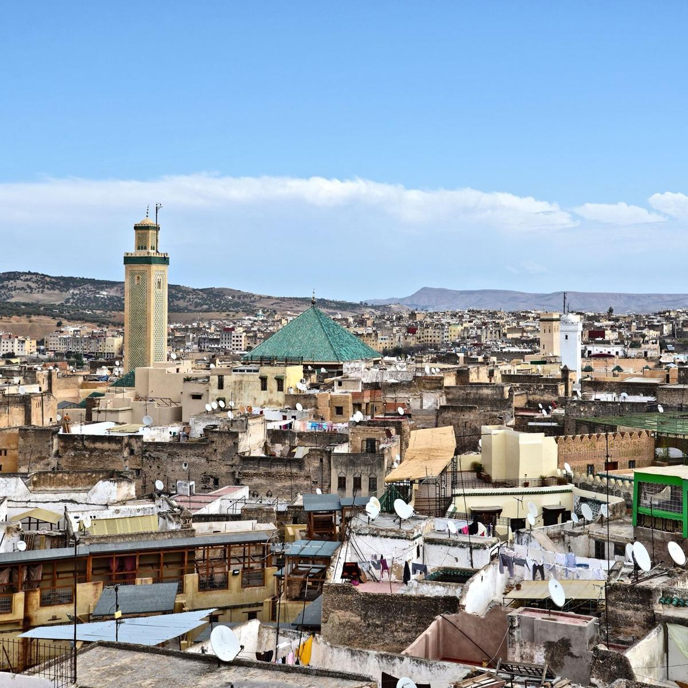
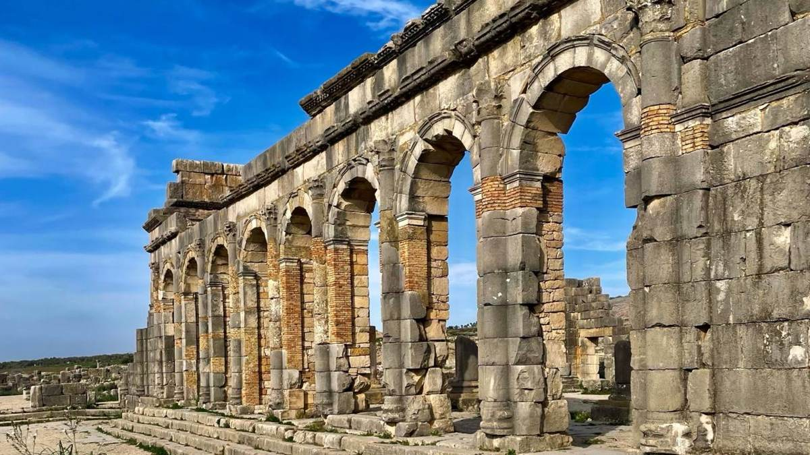

Walking into the medina of Fes is like stepping back a thousand years. Donkeys carry goods through lanes too narrow for cars, coppersmiths hammer trays in small squares, and the smell of cedar, spices and leather follows you around every corner. Fes el-Bali, the old city, is one of the largest car-free urban areas in the world and a UNESCO World Heritage site since 1981.
It is also famous for being easy to get lost in. This guide gives you the keys to understand the medina: its history, the sights you should not miss, entrance fees, how to find your way, how to avoid the common hassles and how much time you need.
Fes in a few dates
- 789: Idris I founds the city on the banks of the Fes river. His son Idris II makes it his capital a few years later.
- 9th century: families from Kairouan (Tunisia) and Andalusia settle on the two banks, bringing their crafts and traditions.
- 859: Fatima al-Fihri, a woman from Kairouan, founds the Al Quaraouiyine mosque, which became one of the oldest universities in the world still in activity.
- 13th–14th centuries: the Marinid sultans build Fes el-Jdid (“new Fes”) and the most beautiful madrasas of the city.
- Today: about a quarter of a million people still live in Fes el-Bali, and thousands of craftsmen work as their ancestors did.

The sights you should not miss
Bab Boujloud, the Blue Gate
The main entrance to the medina, covered in blue tiles on the outside and green tiles on the inside, the colours of Fes and of Islam. It was built in 1913, but it frames a beautiful view of two old minarets. Most visits start here.
The Bou Inania madrasa
Built in the 1350s by the Marinid sultan Abu Inan, it is one of the very few religious buildings in Morocco that non-Muslims can visit. Look up at the carved cedar, the stucco as fine as lace and the zellige mosaics. Entrance: about 20 dirhams. It closes during prayer times.
The Al Attarine madrasa
Smaller and even more delicate, next to the spice market. Its courtyard is a masterpiece of Marinid decoration. Entrance: about 20 dirhams.
Al Quaraouiyine
The spiritual heart of Fes. Non-Muslims cannot enter, but from the main doors you can see the great courtyard with its fountains and white arches. The library, one of the oldest in the world, holds manuscripts more than a thousand years old.
The Chouara tannery
The most famous image of Fes: hundreds of stone vats filled with natural dyes, where workers soak and colour the hides as they have done for centuries. You see it from the terraces of the leather shops around it.
- Go in the morning, when the colours are brightest and the workers are busy.
- You will be given a sprig of mint to hold under your nose: the smell is strong.
- The view is free, but the shop will invite you to look at its leather. You are not obliged to buy; a small tip to the person who guided you up is polite.

Seffarine square
The square of the coppersmiths, where the sound of hammers never stops. Here craftsmen still make the huge pots used for weddings.
Nejjarine: fountain and museum of wood
A beautiful tiled fountain and an old caravanserai (funduq) turned into a museum of woodwork, with a café on the roof. Entrance: about 30 dirhams.
Dar Batha
A 19th-century palace with an Andalusian garden, home to the Museum of Islamic Arts (ceramics, carpets, astrolabes). Entrance: about 60 dirhams. Closed on Mondays.
Fes el-Jdid, the Mellah and the Royal Palace
Outside the old medina, see the famous golden doors of the Royal Palace (from the outside only) and the Mellah, the old Jewish quarter with its wooden balconies and the Ibn Danan synagogue.
The viewpoints
For the best panorama, go up to the Merenid tombs or the Borj Nord fortress on the hill in the late afternoon. The whole medina turns golden and the calls to prayer rise from hundreds of minarets.
Entrance fees at a glance
| Site | Approx. price | Note |
|---|---|---|
| Bou Inania madrasa | 20 dirhams | Closes during prayers, longer on Fridays |
| Al Attarine madrasa | 20 dirhams | Small, go early |
| Nejjarine museum | 30 dirhams | No photos of the exhibits |
| Dar Batha | 60 dirhams | Closed on Mondays |
| Borj Nord (arms museum) | 20 dirhams | Great view |
| Chouara tannery | Free | From the shop terraces |
Prices and opening hours can change; most sites are open roughly from 9 or 10 AM to 5 or 6 PM.
How not to get lost (too much)
The medina has thousands of lanes and dead ends, and GPS is often wrong under the covered souks. But it has a simple structure:
- Two main streets, Talaa Kebira and Talaa Seghira, run downhill from Bab Boujloud to the centre around Al Quaraouiyine. If you are lost, ask for “Bab Boujloud” and walk uphill.
- Look at the signs: coloured plaques at the corners show the main walking routes.
- Take a licensed guide for your first day: the guide knows the shortcuts, opens the doors of the workshops and explains what you see. Official guides carry a badge.
- Avoid “faux guides”: if a stranger tells you a street is closed or offers to show you the way, politely say no thank you. Shops pay commissions to the people who bring them customers.
Good to know
On Friday, many shops in the medina are closed or open only in the afternoon, after the midday prayer. Plan your shopping for another day.
Shopping and crafts
Fes is the craft capital of Morocco. Each trade has its own street: leather, copper, wood, weaving, ceramics with the famous “Fes blue” and embroidery. Take your time, compare and bargain with a smile: read our tips for bargaining and tipping.
What to eat in Fes
- Pastilla: the famous sweet and savoury pie with pigeon or chicken, almonds and cinnamon, a speciality of Fes.
- Bissara: a hot fava bean soup with olive oil and cumin, the breakfast of the medina.
- Khlii: spiced dried meat, cooked with eggs in the morning.
- Snail soup and street snacks around Bab Boujloud in the evening.
More dishes in our guide to Moroccan food.
How many days in Fes, and day trips
Plan two full days: one with a local guide in Fes el-Bali, and one for Fes el-Jdid, the museums, the viewpoints and some shopping. With a third day you can add:
- Volubilis and Meknes (about an hour away): Roman mosaics and the imperial gates of Moulay Ismail.
- Ifrane and the cedar forest of Azrou, with the Barbary macaques.
- Chefchaouen, better with a night there: see our Chefchaouen guide.

From Fes, the desert is one long beautiful day away. See our 3-day Sahara tour from Fes, the 3-day tour from Fes to Marrakech and all our tours from Fes. Our photography tour and student group tour both include a full day in Fes with a local guide.
Frequently asked questions
Do I need a guide in the Fes medina?
It is not required, but we strongly recommend one for your first visit. A licensed guide saves you time, avoids the hassle and shows you places you would never find alone.
Is the Fes medina safe?
Yes, during the day it is safe and busy. In the evening, stay on the main lanes, keep your valuables close and avoid empty dead ends. Read more in is it safe to travel to Morocco.
Can non-Muslims enter the mosques of Fes?
No. Mosques, including Al Quaraouiyine, are closed to non-Muslims, but you can visit the Bou Inania and Al Attarine madrasas and look into Al Quaraouiyine from the doors.
Does the Chouara tannery smell bad?
The smell is strong, especially in summer, but it is part of the experience. Hold the sprig of mint you are given and you will be fine after a few minutes.
Fes or Marrakech: which is better?
They are very different. Fes is older, more authentic and centred on crafts; Marrakech is livelier, with palaces, gardens and the Jemaa el-Fnaa square. If you can, visit both.
Keep reading: Chefchaouen guide · First time in Morocco: 25 tips · Best places to visit in Morocco